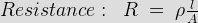

To make the commutation satisfactory we have to make sure that the electric current flowing through the coil completely reversed during the commutation period attains its full value.
There are two main methods of improving commutation. These are
- Resistance commutation
- E.M.F. commutation
Resistance Commutation
In this method of commutation we use high electrical resistance brushes for getting spark less commutation. This can be obtained by replacing low resistance copper brushes with high resistance carbon brushes.
We can clearly see from the picture that the electric current IC from the coil C may reach to the brush in two ways in the commutation period. One path is direct through the commutator segment b and to the brush and the 2nd path is first through the short-circuit coil B and then through the commutator segment a and to the brush. When the brush resistance is low, then the electric current IC from coil C will follow the shortest path, i.e. the 1st path as its electrical resistance is comparatively low because it is shorter than the 2nd path.
When high resistance brushes are used, then as the brush moves towards the commutator segments, the contact area of the brush and the segment b decreases and contact area with the segment a increases. Now, as the electrical resistance is inversely proportional to the contact area of then resistance Rb will increase and Ra will decrease as the brush moves. Then the electric current will prefer the 2nd path to reach to the brush. Thus by this method of improving commutation, the quick reversal of electric current will occur in the desired direction.

ρ is the resistivity of the conductor.
l is the length of the conductor.
A is the cross-section of the conductor (here is this description it is used as contact area).
Resistance Commutation
E.M.F. Commutation
The main reason of the delay of the electric current reversing time in the short circuit coil during commutation period is the inductive property of the coil. In this type of commutation, the reactance voltage produced by the coil due to its inductive property, is neutralized by producing a reversing emf in the short circuit coil during commutation period.
Reactance voltage: The voltage rise in the short circuit coil due to inductive property of the coil, which opposes the electric current reversal in it during the commutation period, is called the reactance voltage.
We can produce reversing emf in two ways
1. By brush shifting.
2. By using inter-poles or commutating poles.
Brush Shifting Method of Commutation
In this method of improving commutation the brushes are shifted forward direction for the DC generator and in backward direction for the motor for producing the sufficient reversing emf for eliminating the reactance voltage. When the brushes are given the forward or backward lead then it brings the short circuit coil under the influence of the next pole which is of the opposite polarity. Then the sides of the coil will cut the necessary flux form the main poles of opposite polarity for producing the sufficient reversing emf. This method is rarely used because for best result, with every variation of load, the brushes have to be shifted.
Brush Shifting Method of Commutation
Method Of Using Inter-Pole
In this method of commutation some small poles are fixed to the yoke and placed between the main poles. These poles are called inter-poles. Their polarity is same as the main poles situated next to it for the generator and for the motor the polarity is same as the main pole situated before it. The inter-poles induce an emf in the short circuit coil during the commutation period which opposes reactance voltage and give spark-less commutation.
Method of Using Inter-pole
 by
by